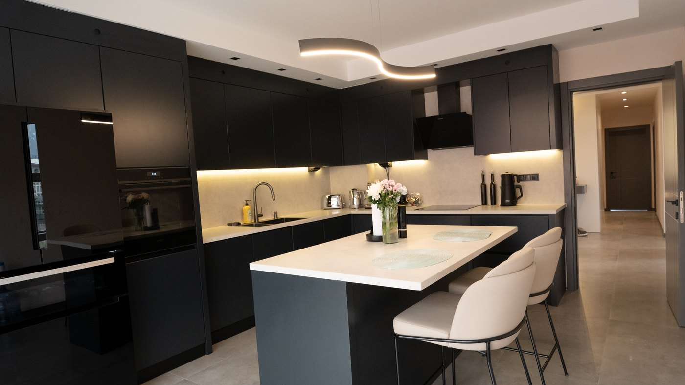

Modern, geniş ve fonksiyonel mutfak
Merkezdeki ada mutfak hem güçlü depolama hem de iki kişilik bar kullanımı için kurgulandı. Frenli ve çift açılımlı mekanizmalarla uzun ömürlü kullanım hedeflendi.

Konut / İç Mimari & Uygulama
Mevcut bir yapının, yeni yaşam senaryolarına göre kişiselleştirilmiş modern bir aile evine dönüşümü.
Proje Galerisi
Bkare Mimarlık İnşaat olarak, yakın dostumuz Sinan Bey ve değerli eşi için hayata geçirdiğimiz Zora Ailesinin Evi, mevcut bir yapının hayal gücü ve profesyonel dokunuşlarla nasıl tamamen kişiselleştirilmiş bir yaşam alanına dönüştüğünün güçlü örneklerinden biridir.
Firmamız için özel bir yere sahip olan bu projede, evi devraldığımızda kullanılabilir durumda olan iç mekanı, yeni çiftimizin zevklerine ve ihtiyaçlarına göre sıfırdan kurguladık. Mevcut duvarları yeniden ele alarak salonu, mutfağı ve yaşam alanlarını yeni kullanım senaryolarına göre inşa ettik.
Merkezdeki ada mutfak hem güçlü depolama hem de iki kişilik bar kullanımı için kurgulandı. Frenli ve çift açılımlı mekanizmalarla uzun ömürlü kullanım hedeflendi.
Kısıtlı giriş alanında büyük vestiyer yerine fugalı lambiri, dresuar ve kompakt ayakkabılık ile daha hafif, işlevsel bir karşılama alanı oluşturuldu.
Üç oda birleştirilerek ferah bir süit yaratıldı. Çatı eğimindeki atıl alanlar özel ölçü dolaplarla değerlendirildi.
Çatı izolasyonu, zemin yenilemeleri ve çatı eğimine özel duşakabin çözümleriyle estetik kararlar teknik iyileştirmelerle tamamlandı.
Ortaya Çıkan Sonuç
Bkare Mimarlık İnşaat olarak, Zora Ailesi'ne yeni hayatlarında mutluluklar diler; hayallerindeki yaşam alanını gerçeğe dönüştürme yolculuğunda bize güvendikleri için teşekkür ederiz.
Diğer Projeler